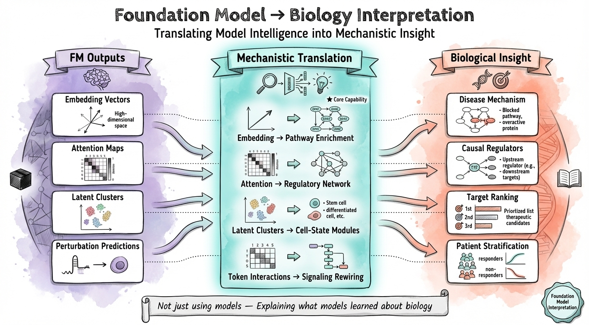
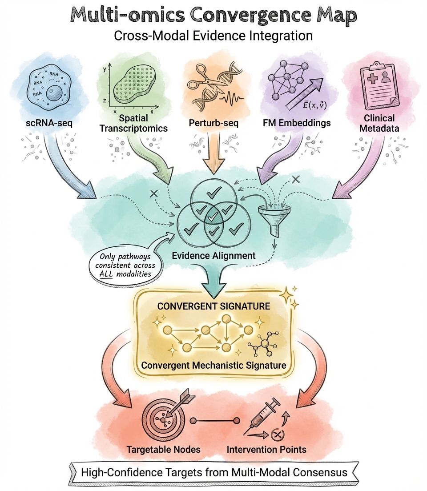
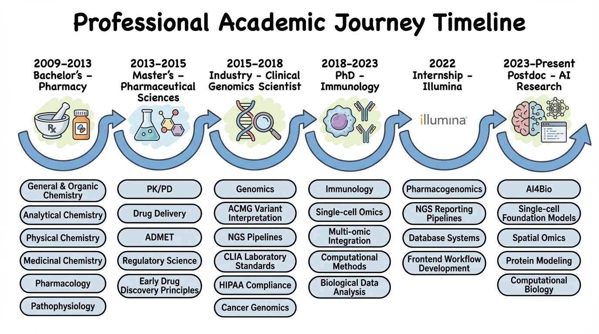

🎯 I leverage foundation models and multi-omic data to uncover disease mechanisms and identify therapeutic targets. My work transforms single-cell, spatial, and perturbation data into mechanistic insights—mapping causal pathways, decoding microenvironments, and prioritizing druggable targets for therapeutic discovery.
🧬 Core Expertise: I specialize in extracting biological meaning from AI model outputs. My background in 🧬 biology, 💊 pharmacology, ⚗️ chemistry, and 💻 computational modeling enables me to translate foundation model embeddings into mechanistic hypotheses and actionable target nominations.
I obtained my PhD in Genetics, Genomics, and Bioinformatics from UC Riverside in 2023, advised by Professor Adam Godzik. Download my resume.
What I Do

Translating model intelligence into mechanistic insight
Foundation Model Mechanistic Interpretation Primary
I extract biological insights from foundation models (UCE, scGPT, Geneformer, TranscriptFormer) by analyzing attention patterns, embedding structures, and latent representations. My focus is on interpreting what these models learn about gene regulation, pathway activity, and cell state—translating computational outputs into mechanistic hypotheses for target discovery.
Multi-Omic Mechanistic Integration
I integrate single-cell, spatial, and perturbation data to map disease mechanisms. This includes identifying disease-driving cell populations, inferring causal gene regulatory networks, decoding immune microenvironment dynamics, and evaluating target plausibility through cross-modal evidence synthesis.

High-confidence targets from multi-modal consensus
Spatial Microenvironment & Target Context
I analyze spatial transcriptomics to understand how tissue architecture drives disease. This includes mapping spatial niches that harbor disease-relevant cell states, linking ligand-receptor signaling with foundation model embeddings, and identifying microenvironment-dependent therapeutic targets.
Therapeutic Discovery Workflows
I build interpretable computational frameworks that connect AI outputs to therapeutic decision-making—from mechanism-of-disease modeling to target nomination, supporting experimental validation and translational research.
Technical Capabilities

End-to-end platform methodology
🧠 Mechanistic AI
- Foundation Models: UCE, scGPT, Geneformer, TranscriptFormer, scPRINT, CellPLM
- Deep Learning: PyTorch, TensorFlow, Hugging Face Transformers, Attention Mechanisms
- Embedding Analysis: Cosine similarity, centroid-based comparisons, quality assessment
- Transfer Learning: Cross-species analysis, domain adaptation, embedding space optimization
- Large-Scale Processing: 226K+ cell embedding generation, 500K+ cell analysis
🔬 Multi-Omic Mechanistic Integration
- Single-Cell: CellRanger, Seurat, Scanpy, SingleR, scCATCH
- Trajectory & Velocity: scVelo, CellRank2, Monocle3, PAGA
- Regulatory Networks: pySCENIC for TF analysis & GRN inference
- Cell Communication: CellChat for intercellular signaling
- Perturbation: Large-scale CRISPR screening (2,907+ targets)
- Pathway Analysis: clusterProfiler, ReactomePA, GSVA
💊 Therapeutic Discovery Logic
- Structure Prediction: AlphaFold2, ESMFold, RoseTTAFold
- Protein Design: ESM, ProteinMPNN, ProstT5 for generative enzyme design
- Molecular Modeling: GROMACS, DiffDock, AutoDock Vina, PyMOL
- Drug Design: ADMET prediction, SAR analysis, peptide therapeutics
- Pharmacogenomics: PharmVar, PharmGKB, CPIC, ACMG variant classification
🛠️ Tools & Platforms
- Languages: Python, R, SQL, Bash, JavaScript, Java
- HPC: SLURM, GPU/CUDA (A100), parallel processing, memory optimization
- Containers: Docker, Singularity for reproducible workflows
- ML Libraries: Pandas, NumPy, Scikit-learn, XGBoost, RDKit
- Visualization: ggplot2, Plotly, Seaborn, Shiny, BioRender
- Databases: GEO, KEGG, UniProt, ClinVar, gnomAD, STRING
Looking Ahead
I aim to advance AI-enabled target discovery by building mechanistic reasoning frameworks that connect foundation model insights to therapeutic hypotheses. My goal is to work at the intersection of computational biology and drug discovery—collaborating with experimentalists to validate targets and translate computational predictions into actionable therapeutic strategies.
What I bring: The ability to extract disease mechanisms from complex multi-omic data, interpret AI model outputs through a biological lens, and bridge computational predictions with experimental validation for target discovery.
📋 Additional Competencies
Clinical Genomics: Three years of experience in ACMG variant classification, NGS pipeline development, and genomic data interpretation.
Structural Biology: Molecular dynamics (GROMACS), molecular docking (DiffDock, AutoDock Vina), structure-based analysis.
Regulatory Knowledge: IND-enabling studies, GLP standards, ADMET prediction, PK/PD modeling fundamentals.
🚀 My Interdisciplinary Journey

From pharmaceutical sciences to AI-driven target discovery
Let's Connect
Interested in AI-driven target discovery, mechanistic biology, or foundation model interpretation? Feel free to reach out via email or connect on LinkedIn.